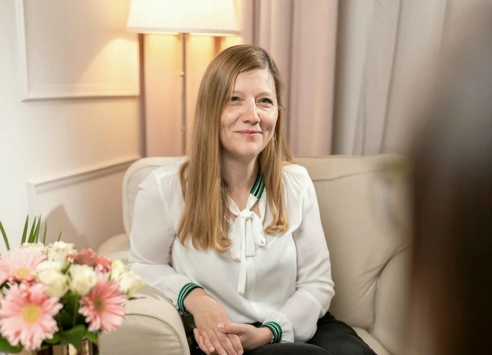
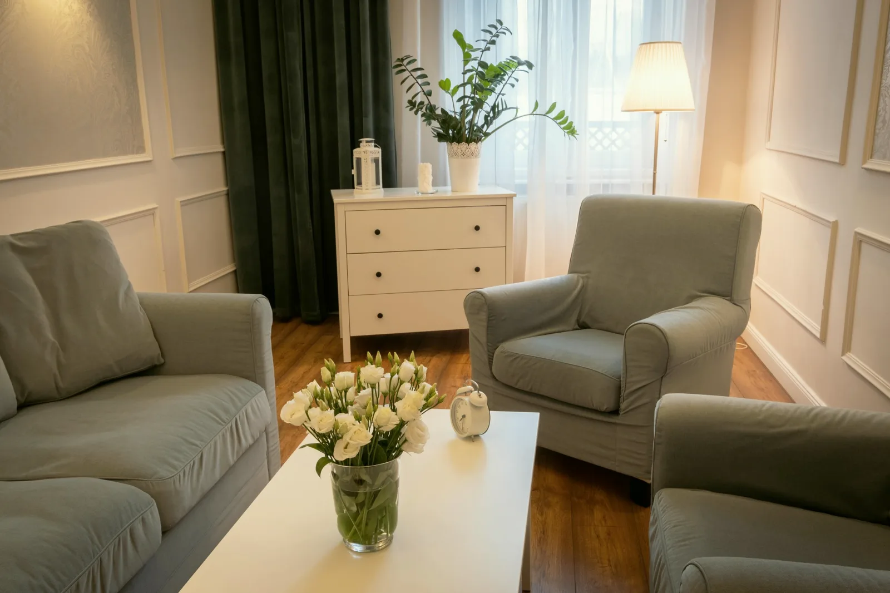

Párként
Ugyanaz a vita, harmadszor is
A terapeuta mindkettejüké. A beszélgetés a közös térről szól, nem arról, ki hibázott.

Családként
Nem értjük egymást otthon
Azok ülnek le, akiket a helyzet érint. A terapeuta a családdal dolgozik, nem a kijelölt hibással.
Párterápia
Amikor a kettejük dolga már nem megy kettesben
Ugyanaz a vita más szavakkal. Eltávolodás, féltékenység, egy megtört bizalom, vagy egy döntés, ami elé együtt kell állni: gyerek, költözés, válás.
A párterápiában mindketten jelen vannak, és a terapeuta a kapcsolattal dolgozik, nem valamelyikükkel. Egy alkalom 50 perc. A díj a szakember díjsávja szerint alakul, ezt a profilja mutatja.
23 szakemberünk dolgozik párkapcsolati témával, közülük a párterápiát vállalók a szűrt regiszterben.
Családterápia
Nem értjük egymást otthon
A kamaszunk bezárkózott. A szülők és a nagyszülők másképp nevelnek. Egy betegség, egy válás vagy egy költözés átrendezte a szerepeket, és azóta senki nem találja a helyét.
A családterápián azok ülnek le, akiket a helyzet érint: néha mindenki, néha csak ketten-hárman. Gyereket tizenkét év felett fogadunk. Ha a gyerek fiatalabb, kérdezze az ügyfélszolgálatot, milyen keret lehetséges.
21 szakemberünk dolgozik család és gyereknevelés témával.
- 01Kamasz, aki bezárkózott
- 02Válás, mozaikcsalád, új társ a házban
- 03Betegség vagy veszteség a családban
- 04Több generáció egy háztartásban
Kinek való, és kinek nem most
Nem minden helyzetre a pár- vagy családterápia a megfelelő keret. Ha nem az, megmondjuk, és megmondjuk azt is, mi lehet helyette.
Való
- Ha mindketten jönnek. Akkor is, ha egyikük kételkedik benne. A kételyt a szobában lehet kimondani.
- Ha a vita már nem a témáról szól. Hanem arról, ki kinek mit mondott, és ki kezdte. Ilyenkor a mintát nézzük, nem az esetet.
- Ha egy döntés elé együtt kell állni. Gyerek, költözés, karrier, betegség a családban, egy szülő gondozása.
- Ha a család egy változás után nem találja az új rendet. Válás, új társ, kamaszkor, kirepülés, gyász.
Nem, vagy nem most
- Ha a kapcsolatban bántalmazás van. A párterápia ilyenkor nem a megfelelő keret. Egyéni segítséget javaslunk, és megmondjuk, hova fordulhat.
- Ha egyikük már döntött, de még nem mondta ki. A párterápia ritkán a bejelentés helye. Az egyéni terápia ilyenkor többet segít, mindkettejüknek.
- Ha akut pszichiátriai krízis vagy aktív függőség van. Először annak a kezelése. A pár- vagy családterápia ehhez kapcsolódik, a szakember javaslata szerint.
Amit előre kérdeznek
Mindkettőnknek el kell jönnünk az első alkalomra?
A párterápia párban kezdődik. Ha a társa most nem jön, Ön jöhet egyedül, egyéni keretben, és a szakemberrel átbeszélik, mi lehet a következő lépés.
Mennyi ideig tart egy pár- vagy családterápia?
Egy alkalom 50 perc. A folyamat hosszát az első alkalmak után a szakemberrel közösen döntik el. Előre nem ígérünk számot, mert az a helyzettől függ, nem a naptártól.
Hány éves kortól jöhet a gyerek családterápiára?
Tizenkét év felett. Fiatalabb gyerek esetében az ügyfélszolgálat tájékoztat, milyen keret lehetséges, és hova érdemes fordulni.
Mennyibe kerül, és ki fizeti?
A díj a szakember díjsávja szerint alakul, ezt a profilja mutatja, a sávok az Árak oldalon állnak. Egy alkalom egy díj, függetlenül attól, hányan ülnek a szobában. A fizetés módjáról az ügyfélszolgálat tájékoztat.
Ami itt nincs, azt az ügyfélszolgálat válaszolja meg hétköznap 9 és 15 óra között: +36 30 961 1364.
Együtt jönnek, együtt döntenek
A kérdés nem az, ki rontotta el, hanem az, hogyan lehet újra egy asztalnál ülni. Az első alkalom erről szól.